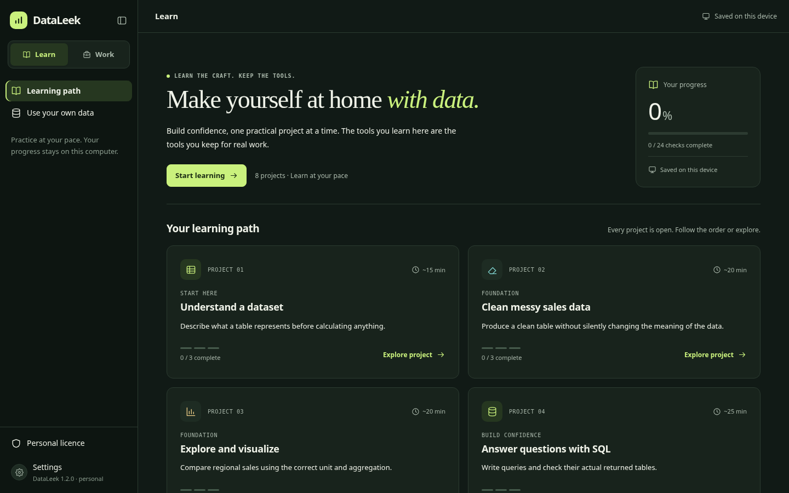
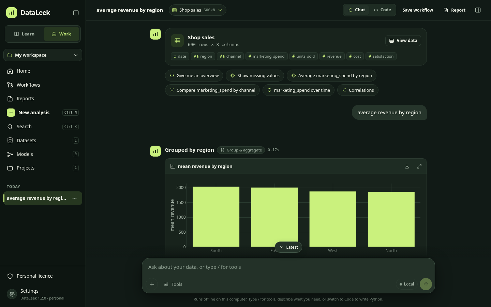

01
Start here
Understand a dataset
Describe what a table represents before calculating anything.
What you’ll practice
- Count the observations
- Recognize an identifier
- Find the unknown values
YOUR PERSONAL ANALYTICS WORKSPACE
Build confidence with data, then bring your own. Guided practice and real analytical work, together on your computer.
One person. One device. Every analytical feature.
No DataLeek account. No required AI key. No subscription.

Your next dataset can be your own.
A LEARNING PATH THAT LEADS SOMEWHERE
Work through real calculations, get local feedback, and use hints when you need them. Every project is available; move at your pace.
Start here
Describe what a table represents before calculating anything.
Foundation
Produce a clean table without silently changing the meaning of the data.
Foundation
Compare regional sales using the correct unit and aggregation.
Build confidence
Write queries and check their actual returned tables.
Build confidence
Use pandas to produce inspectable analytical results.
Apply judgment
State what a calculation supports and what it cannot establish.
Apply judgment
Train a small model while keeping evaluation separate from fitting.
Put it together
Save a report with its working and create a workflow for the next dataset.
Included teaching data is synthetic. Checks assess specified results; they do not certify your professional competence or automatically judge the quality of every conclusion.
UNDERSTAND THE RESULT, NOT JUST THE BUTTON
Read the idea. Try the exercise. Inspect the output. Get a hint or review a worked example, then try again.
SQL and Python checks compare results, not one exact code string. Your progress is saved locally. Reading a solution does not mark an exercise complete.
Keep your learning workspaceTHE SAME WORKSPACE. YOUR OWN DATA.
Switch from Learn to Work whenever you’re ready. Your licence includes the full analytical toolkit from the start.
Import spreadsheets and data files, or connect to your own database. Profile, filter, join and transform with undoable versions.
Use guided analytical tools, SQL or Python. Explore charts, statistics, forecasting and models. Optional AI uses your chosen provider or local model.
Write a report with evidence and caveats. Save workflows, apply them to fresh inputs, and keep separate report snapshots and run history.

ONE PRODUCT. A WORKSPACE YOU KEEP.
All the learning projects. All the analytical tools. A licence for you, bound to your device.
Your databases, drivers, storage and optional external services remain under your control. Custom integrations and bespoke training are quoted separately.
DATALEEK PERSONAL
R2,995once-off · excluding VAT
1 person · 1 activated device
Perpetual use of the purchased major version. Optional future major upgrades at 35% of the equivalent new licence. No automatic renewal.
A SIMPLE OFFLINE ACTIVATION
The installer opens an activation screen. A signed licence for another computer will not unlock your copy. Existing saved work can still be viewed and exported.
Ordinary copying is deterred by device binding. Offline desktop software is not impossible to modify or crack, and cloned operating-system identities can require additional handling.
The app creates a hashed device code locally. No raw hardware serial, user name or analytical data is included.
Pay through the configured PayFast checkout, then send the request with your order reference using the receipt contact.
After payment verification, the seller sends a licence for this device. Import it to unlock Learn and Work, offline.
YOUR COMPUTER. YOUR WORKSPACE.
Version 1.2 introduces Learn and the device-bound personal licence. Check the release notes for the installer version available. New installations require activation; there is no unrestricted executable trial.
KNOW WHAT YOU’RE GETTING
Yes. One personal licence includes Learn and every Work feature. Learning progress does not lock analytical tools. Advanced integrations can be enabled when you need them; there are no Company or Enterprise editions.
No account is needed. The course, feedback and analytical tools work without AI. If you choose optional AI, use your own provider credentials or a model endpoint you control.
The new installation requires a licence matching that device. A copied licence is checked against the current computer’s independently derived code. Device binding deters ordinary sharing; it is not a guarantee against software modification or cloned OS identities.
An app reinstall on the same OS/device identity can reuse the signed licence. OS reinstallation, motherboard replacement or a new computer may change the device code. Export a new request and contact the seller with your receipt for a manual transfer. Stop using the previous installation; an offline system cannot remotely revoke it.
You may keep using the purchased major version on your activated device. Maintenance updates are included for 12 months; support is included for 90 days, up to two hours. Future major upgrades and further support are optional purchases. You retain your rights to your own data and original work.
No. Guided checks assess specified practice results. They do not certify job readiness, guarantee employment or automatically establish that every interpretation is sound. Use the examples, inspect the working and build judgment through real practice.
In your local data folder. Backups include learning attempts and progress. Your activation request contains a one-way device code. The app does not automatically upload progress, projects or device identifiers to DataLeek.
File imports are limited to 50 MiB, 100,000 rows and 200 columns. Model comparison uses up to 5,000 input rows, 40 input features and five candidates. Filter or aggregate larger sources in your own database before importing.